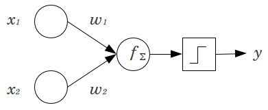

The bias node in a neural network is a node that is always 'on'. That is, its value is set to 1 without regard for the data in a given pattern. It is analogous to the intercept in a regression model, and serves the same function. If a neural network does not have a bias node in a given layer, it will not be able to produce output in the next layer that differs from 0 (on the linear scale, or the value that corresponds to the transformation of 0 when passed through the activation function) when the feature values are 0.
Consider a simple example: You have a feed forward perceptron with 2 input nodes x1 and x2, and 1 output node y. x1 and x2 are binary features and set at their reference level, x1=x2=0. Multiply those 2 0's by whatever weights you like, w1 and w2, sum the products and pass it through whatever activation function you prefer. Without a bias node, only one output value is possible, which may yield a very poor fit. For instance, using a logistic activation function, y must be .5
, which would be awful for classifying rare events.
A bias node provides considerable flexibility to a neural network model. In the example given above, the only predicted proportion possible without a bias node was 50%
, but with a bias node, any proportion in (0,1) can be fit for the patterns where x1=x2=0. For each layer, j, in which a bias node is added, the bias node will add Nj+1 additional parameters / weights to be estimated (where Nj+1 is the number of nodes in layer j+1
). More parameters to be fitted means it will take proportionately longer for the neural network to be trained. It also increases the chance of overfitting, if you don't have considerably more data than weights to be learned.
With this understanding in mind, we can answer your explicit questions:
Bias nodes are added to increase the flexibility of the model to fit the data. Specifically, it allows the network to fit the data when all input features are equal to 0
, and very likely decreases the bias of the fitted values elsewhere in the data space.
Typically, a single bias node is added for the input layer and every hidden layer in a feedforward network. You would never add two or more to a given layer, but you might add zero. The total number is thus determined largely by the structure of your network, although other considerations could apply. (I am less clear on how bias nodes are added to neural network structures other than feedforward.)
Mostly this has been covered, but to be explicit: you would never add a bias node to the output layer; that wouldn't make any sense.